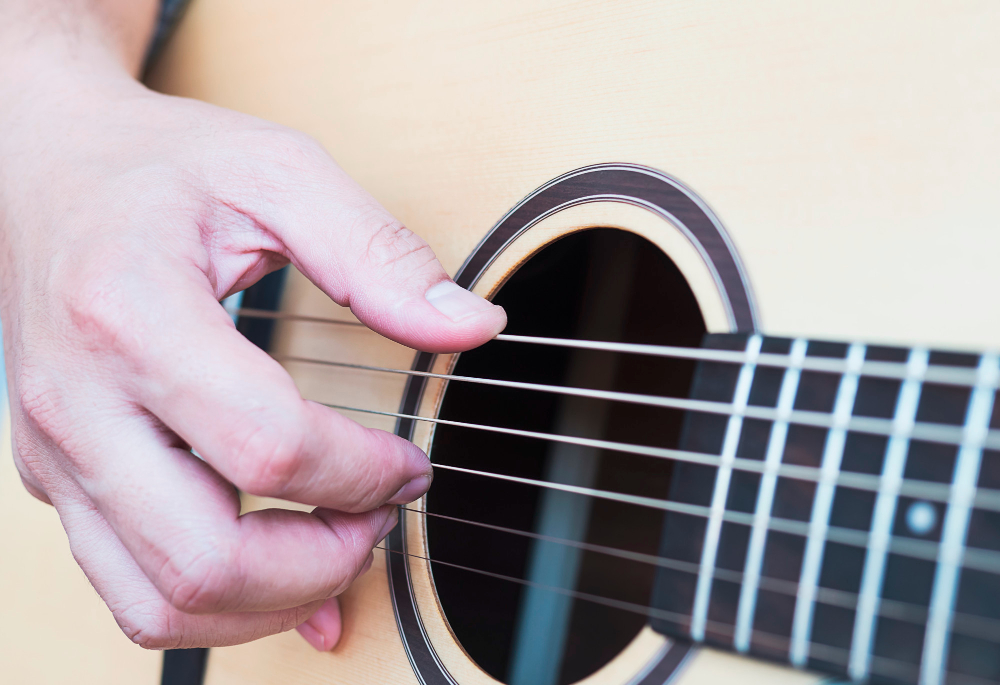

Tekstien lähde: Wikipedia
Kitaransoittotekniikoita
Näppäily (kitara)
Näppäily (engl. fingerpicking, fingerstyle) on kitaran tai muun kielisoittimen (kuten banjon tai basson) soittotekniikka, jossa kieliä näppäillään sormenpäillä tai kynsillä. Näppäilytyyliä käytetään laajalti esimerkiksi klassisen musiikin soittamiseen kielisoittimilla. Myös monet jazz-kitaristit ovat käyttäneet näppäilytekniikkaa, esimerkiksi Wes Montgomery, Joe Pass ja myöhemmin englantilainen Martin Taylor. Rock-musiikissa näppäily on harvinaisempaa kuin plektralla soittaminen, vaikka poikkeuksia toki esiintyy (esimerkiksi Jeff Beck, Lindsey Buckingham ja Mark Knopfler).
Kuva osoitteesta www.freepik.com
Erilaisia näppäilytyylejä
Näppäilytyylejä on monenlaisia. Kenties perinteisin lähestymistapa näppäilyyn on laittaa näppäilykäsi kielten yläpuolelle lähelle kitaran ääniaukkoa. Vaikka monet kitaransoittajat "nojaavat" soittaessaan peukalolla johonkin kieleen, niin yleisesti ottaen sormet koskettavat kieliä vain kun kieli laitetaan värähtelemään äänen tuottamiseksi. Toinen tekniikka on asettaa sormet valmiiksi kielille ennen niiden näppäämistä. Tällaista tekniikkaa käytetään erityisesti arpeggioilla soitettaessa.
Monet soittajat tukevat soittaessaan pikkusormen tai nimettömän kitaran kantta vasten. Yleensä näppäilysoitossa soitetaan peukalolla bassokieliä (kitarassa E, A ja D) ja etusormella, keskisormella, nimettömällä ja joskus myös pikkusormella muita kieliä.
Hybrid picking
Tämä näppäilytyyli on erityisesti sellaisten kitaristien suosiossa, jotka soittavat vain harvoin näppäillen. Hybrid picking -soittotekniikassa käytetään plektraa ja sormia samanaikaisesti. Plektraa pidetään tavalliseen tapaan peukalon ja etusormen välissä ja vapaiksi jäävät sormet käytetään näppäilyyn.
Koska hybrid picking on erityisen otollinen soittotekniikka niille kitaristeille, jotka käyttävät plektraa, se on löytänyt tiensä moniin musiikkityyleihin, jossa näppäilyä muuten käytetään hyvin harvoin, muun muassa rockiin ja kitaristi Zakk Wylden myötä jopa heavy metalliin. Monet nykypäivän kitaristit käyttävät toisinaan hybrid picking -tekniikkaa. Ritchie Blackmore käytti sitä "Smoke on the Water" -kappaleen kuuluisassa aloitusriffissä. Carl Verheyen, Brett Garsed, Albert Lee ja Steve Trovato käyttävät tätä tekniikkaa country- ja rockmusiikissa. Muita tunnettuja hybrid picking -soittotekniikan käyttäjiä ovat muun muassa Gustavo Assis-Brasil, Jimmy Page, Albert Lee, Eric Johnson, Wayne Krantz, Steve Trovato, Carl Verheyen, Marshall Harrison ja Brett Garsed.
Pattern picking
Pattern picking on varsin yksinkertainen näppäilytyyli. Siinä oikea käsi näppäilee kieliä tietyn "kaavan" mukaan samalla, kun vasen käsi vaihtelee eri sointujen välillä. Tämän soittotekniikan uranuurtajana pidetään amerikkalaista laulajaa, lauluntekijää ja kitaristia Merle Travisia, jonka mukaan on nimetty yksi yleisimmistä näppäilykaavoista, Travis picking:
M I T M T I T M I T M T I T
T T
Peukalo (T) soittaa bassosäveliä, kun taas etusormi (I) ja keskisormi (M) vuorottelevat diskanttisävelten välillä, jotka yleensä sijaitsevat eri kielillä.
Tremolo
Tremoloa käytetään monenlaisessa musiikissa: bluegrassissa, heavy metallissa, flamencossa, klassisessa musiikissa ja turkkilaisessa kansanmusiikissa. Tekniikkaa voi käyttää sekä plektralla soitettaessa että näppäilysoitossa.
Tremololla tarkoitetaan yhden sävelen toistamista hyvin nopeasti. Näppäilysoitossa tämä saavutetaan tyypillisesti käyttämällä kolmea sormea: etusormea, keskisormea ja nimetöntä, jotka soittavat yhtä säveltä vuorotellen niin, että nimetön aloittaa ja keski- ja etusormi seuraavat perässä. Yleensä väliin soitetaan bassosävel peukalolla.
Slide-kitara
Slide-kitaralla viitataan kitaransoittotyyliin, jossa kitaristi pitää otelaudanpuoleisessa kädessään putkea (tai muuta esinettä), joka määrää äänenkorkeuden, sen sijaan, että nuotti painettaisiin otelaudalta sormella.
Soittotekniikka
Slide-kitaraa soittaessa kieliä ei paineta kohti otelautaa, vaan putkea pidetään kevyesti kosketuksessa kieliin. Näin otelaudalta löytyvät samat nuotit suunnilleen samoista kohdista kuin sormella painettaessa, mutta liikuttamalla putkea pitkin otelautaa sävelkorkeutta voi vaihtaa portaattomasti. Putkeen laitettava sormi on useilla kitaristeilla nimetön, mutta käyttämällä pikkusormea jää eniten tilaa muiden sormien käyttöön, jotka voivat soittaa säveliä otelaudalta normaaliin tapaan.
Putkena käytetään nykyään useimmiten noin otelaudan leveyden pituista metalliputkea, johon mahtuu sisälle yksi sormi (lukuun ottamatta peukaloa). Ensimmäiset slide-soittajat käyttivät usein metalliputken sijaan ennen vanhaan yleisesti saatavilla olleita pieniä lääkepulloja tai juomapullon katkaistua kaulaa. Englannin kielessä käytetäänkin lasiputkella soittamisesta usein sanaa "bottleneck guitar" (pullonkaulakitara). Myös esimerkiksi veitsiä ja sormuksia on käytetty putken sijasta. Eri materiaalista tehdyt esineet tuottavat hieman erilaisia äänenvärejä. Kielet viritetään usein slidea käytettäessä niin sanottuun avoimeen viritykseen. Tällöin avoimet kielet antavat jonkin täyssoinnun (esimerkiksi E-duurisoinnun) ja näin slide-putken avulla voidaan liu'uttaa kokonaisia sointuja ylös alas otelautaa. Jotkut soittajat käyttävät omia virityksiään. Monet slide-soittajat istuvat soittaessaan ja pitävät kitaraansa kanteleen tapaan vaakatasossa reisiensä päällä. Tätä soittotapaa kutsutaan englannin kielessä nimityksellä "steel guitar" tai "across knees". Tällöin sliden ei tarvitse välttämättä olla muodoltaan putki, vaan esimerkiksi juuri veitsi tai metallitanko käy yhtä hyvin. Vibrato tehdään sliden kanssa useimmiten värisyttämällä putkea kielten suuntaisesti tai joidenkin soittajien kohdalla myös pystysuunnassa, jolloin myös soitettavan kielen viereiset kielet värisevät hieman. Sähkökitaralla soittaessa jälkimmäinen tapa lisää äänen säröytymistä kevyesti.
Blues
Slide-kitaran soitto juontaa juurensa Yhdysvaltojen eteläosien maaseudun blues-musiikista. Ulkoisesti slide-soitto oli pyrkimys jäljitellä ihmisäänen liukuvaa, portaatonta sointia. Säveltäjä W. C. Handy oli nähnyt slide-tyyliin veitsellä soittavan blueskitaristin jo vuonna 1903. Toista maailmansotaa edeltävän delta bluesin kuuluisat nimet, kuten Son House ja Robert Johnson, soittivat usein slidella. Blind Willie Johnson on tehnyt joitain tuon ajan kuuluisimmista slide-levytyksistä, mutta ei ole tiedossa, minkä esineen avulla hän soitti. Myöhemmin Muddy Waters ja Elmore James toivat sliden käytön sähköiseen bluesiin 1940-luvun lopulla. Monet tunnetuimmista sähköisen bluesin kitaristeista eivät tosin soittaneet slidella lainkaan.
Nykyisistä muusikoista Ry Cooder ja Mississippi Fred McDowellin oppilas Bonnie Raitt ovat kuuluisia slide-kitaristeja. Uusi nimi oli myös akustista slide-kitaraa soittanut Kelly Joe Phelps, joka levytti 1990-luvun lopulla kolme albumia. Niistä viimeinen oli vuonna 1999 levytetty Shine-Eyed Mr Zen.[1]
Rock
Bluesista vaikutteensa saaneet rock-kitaristit käyttävät usein slidea esikuviensa innoittamina. Erityisesti southern rock -tyyliin slide-kitara kuuluu lähes erottamattomasti. Southern rockin kitarasoundin luojaksikin mainittua Duane Allmania pidetään usein sähköisen slide-kitaroinnin keskeisimpänä kehittäjänä Elmore Jamesin jälkeen. Hän soitti yhtyeissä Allman Brothers Band ja Derek and the Dominos, mutta monet hänen kuuluisimmista kitaraosuuksistaan on levytetty toisten artistien, muiden muassa Wilson Pickettin ja Aretha Franklinin, levyille hänen työskennellessään studiomuusikkona Muscle Shoalsilla Alabamassa 1960-luvulla. Muita esimerkkejä sliden käytöstä rockissa ovat Lynyrd Skynyrd, The Doors, ZZ Top ja Led Zeppelin ja nykyään ehkä merkittävimpinä Gov't Mule sekä Derek Trucks Band. Jotkut soittajat ovat käyttäneet slideä myös bassokitaran kanssa.
Bluesin ja blues-rockin lisäksi slideä käytetään paljon country-musiikissa sekä havaijilaisessa musiikissa.
Kuuluisia slide-kitaralla esitettyjä levytyksiä
- Allman Brothers Band (Duane Allman) – "Statesboro Blues", "Done Somebody Wrong"
- Beatles – "Old Brown Shoe", "Run For Your Life"
- Son House – "Pearline", "Death Letter"
- Elmore James – "The Sky is Crying", "Dust my Broom", "Shake your moneymaker"
- Blind Willie Johnson – "It's Nobody's Fault but Mine", "Dark was the Night"
- Robert Johnson – "Cross Road Blues", "Terraplane Blues"
- Volbeat – "7 Shots"
- Led Zeppelin – "You Shook Me" (myös "Stairway To Heavenin" soolossa on slide-kitaraa)
- Lynyrd Skynyrd – "Free Bird"
- Muddy Waters – "I Can't Be Satisfied", "I Feel Like Going Home", "Rollin' and Tumblin'"
- Mötley Crue – "Primal Scream"
- Hound Dog Taylor – "Give Me Back My Wig"
- Jimi Hendrixin – kuuluisassa "All Along the Watchtower" -kappaleen soolossa käytetään myös slideä (tupakansytytintä putken sijaan). Live-esiintymisissä Hendrix käytti joskus laulumikrofonin tankoa sliden tavoin liikuttamalla kitaran otelautaa sitä vasten.